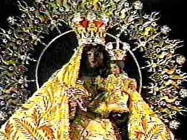
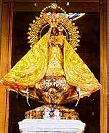
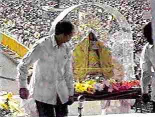
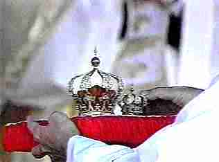
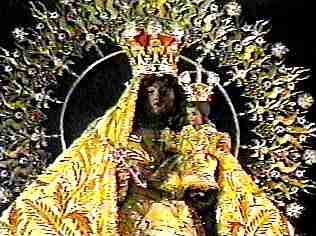
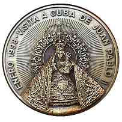

|
|
 |
Pope Crowns Statue of Mary
"Queen of Cuba" in Santiago Cuba.
|  | On Saturday, the 24th of January, 1998, Pope John Paul II crowned this doll-sized statue of Mary as the patroness and "Queen of Cuba" during a papal Mass. |
| The statue, the most venerated and idolized in all of Cuba, is known as La Virgen de la Caridad (The Virgin of Charity at Cobre), and was brought in procession from Cobre to Santiago for the papal Mass. |
|  |
Three fishermen are said to have found the icon floating on a board at sea in the year 1606. The Virgin of Cobre was declared Cuba's national patron saint by Pope Benedict XV in 1916. |
|
The crowns ready for placement by Pope John Paul II. The larger crown was put on the head of the statue of Mary, and the smaller was placed on the head of the smaller doll of the infant Jesus. |
 |
|
Pope John Paul II places the crown on the head of the statue of Mary, proclaiming her the patroness and "Queen of Cuba." An announcer led the large assembled crowd in shouting "Viva! Queen of Cuba", "Viva! Blessed Mother of Charity", and "We all belong to you Mary." |
|
|
 |
 This medal commemorates the papal visit to crown the statue.
Here is a web page with details on
Our Lady of Charity of El Cobre and other Marian Statues, Images, and Titles in Latin America.
Pope Benedict XVI Entrusts Cuba To Mary's Protection
Pope Benedict made the following remarks during his recent trip to Cuba:
I have come as a pilgrim to the house of the blessed statue of Our Lady of Charity, la Mambisa as you call upon her with affection. Her presence in this town of El Cobre is a gift from heaven for all Cubans. ...
Let all those you meet know, whether near or far, that I have entrusted to the Mother of God the future of your country, advancing along the ways renewal and hope, for the greater good of all Cubans. — Benedict XVI: Tuesday, 27 March 2012.
I too greatly have wished to come among you as a pilgrim of charity, in order to thank the Virgin Mary for the presence of her venerable statue of the Sanctuary of El Cobre, whence for four centuries she has accompanied the journey of the Church in this nation and given encouragement to all Cubans ...
As I bid you a heartfelt adios, I ask our Lady of Charity of El Cobre to protect all Cubans under her mantle, to sustain them in the midst of their trials and to obtain from Almighty God the grace that they most desire. Hasta siempre, Cuba, a land made beautiful by the maternal presence of Mary. — Benedict XVI: Wednesday, 28 March 2012.
This is a blatant example of how far Catholicism has departed from the Gospel of Jesus Christ, corrupting it's biblical simplicity with pagan idolatry. The Bible does not teach that Mary has ever been given any intercessory or mediatorial role that she carries out in heaven. In fact, the Bible clearly explains that:
1 Tim 2:5 (KJV) For there is
one God, and
one mediator between God and men, the man
Christ Jesus;
1 Tim 2:5 (KJV) Who gave himself a ransom for all, to be
testified in due time.
In the Old Testament, the unique mediatorial role of Jesus was typified by the high priest of the Hebrew sanctuary. No woman was ever allowed to minister in the sanctuary in a priestly role. It is an absolute impossibility that Mary is engaged in any such role in a biblical Gospel, rather it is an antichrist doctrine of deception that perverts the true Gospel of Jesus Christ. The Bible does not teach that Mary was ever taken to heaven, or that she is anything more than dead in the grave, awaiting her resurrection at the second coming. It was Satan's first lie in the garden of Eden that:
Gen 3:4 (KJV) And the serpent said unto the woman, Ye shall not surely die:
The Catholic zeal for attributing special abilities and powers to the idols Mary and other saints is pure pagan pantheism and idolatry, strictly condemned by God. Catholics will strenuously object that they are not guilty of idolatry, that they are merely "venerating" what they know to be a statue, and that this does not constitute a transgression of God's law, because this veneration is directed not to the statue of wood, stone, silver or gold, but rather their veneration is directed to the worthy person depicted, and so is acceptable and pleasing to God. But the Bible does not teach this to be an acceptable practice. Merely the act of bowing down before any statue constitutes the sin of idolatry, it is clearly prohibited and condemned by God in very strong terms:
Ex 20:4 (KJV) Thou shalt not make unto thee any graven
image, or any likeness of any thing that is in heaven above, or
that is in the earth beneath, or that is in the water under the
earth:
Ex 20:5 (KJV) Thou shalt not bow down thyself to them, nor serve
them: for I the Lord thy God am
a jealous God, visiting the iniquity of the fathers upon the children unto the
third and fourth generation of them that hate me;